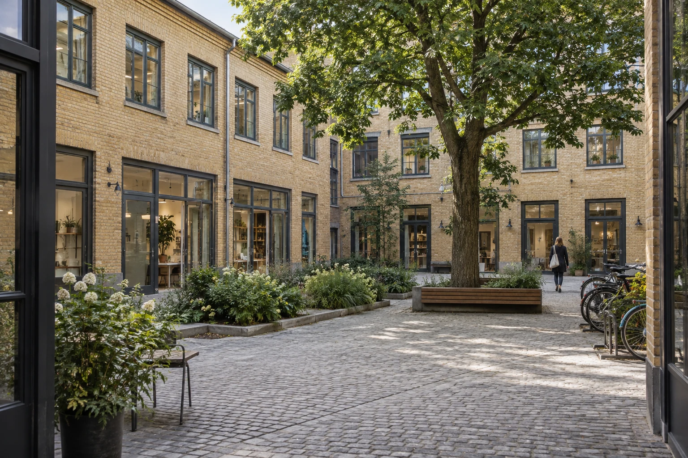

Place operations
The shared everyday.
Our place teams coordinate common-area upkeep, access questions and conversations about shared facilities. Work inside a unit and urgent incidents have different responsibilities to clarify.
Common Quay / Hamburg area / since 2012
We bring the everyday operation of a property into the same conversation as finding its next occupier. Shared spaces, clear information and useful questions are the starting point.

Common Quay was established in Hamburg in 2012 to coordinate the practical life of a small regional collection of commercial properties. Today, our fictional 35-person team works across Dock Court, Linden Yard and Platform House.
Each building has a different size, material character and daily pattern. We keep unit information connected to those differences, so a leasing conversation can begin with the actual space rather than a generic brochure.
How the work connects
Place operations
Our place teams coordinate common-area upkeep, access questions and conversations about shared facilities. Work inside a unit and urgent incidents have different responsibilities to clarify.
Leasing coordination
We prepare unit information and coordinate broker-led conversations. Use, fit-out, costs beyond base rent and timing need to be discussed before any terms could be agreed.
Occupier relationships
Visitor patterns, deliveries and alterations affect neighbours as well as an individual occupier. We help identify who needs to be involved and what information is missing.
A defined role
We do not list homes, sell investments or operate a property fund. This collection includes office and non-food retail examples; specialist business uses need a separate review and are not offered by these listings.
The website demonstrates the information and preparation journey. It does not offer a real lease, arrange a viewing, dispatch maintenance or estimate property returns. All example rents and spaces are invented, and no professional licence or certification is claimed.
Explore the six complete recordsChoose a unit and build a short note for a viewing conversation. The questions change with your business and fit-out plans.